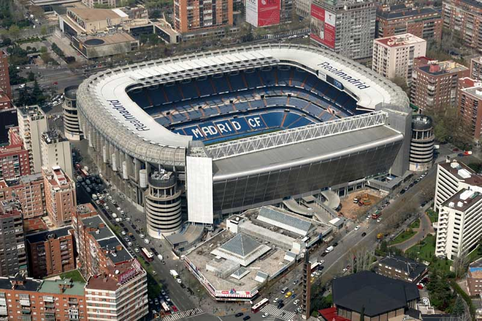

История
 Стадио́н «Сантья́го Бернабе́у»(исп. Estadio Santiago Bernabéu) — футбольный стадион, расположенный в столице Испании — Мадриде. Является домашней ареной футбольного клуба «Реал Мадрид», иногда на нём проводит матчи и сборная Испании. Стадион имеет четвёртую, высшую категорию УЕФА.Вмещает 81 044 зрителя. Стадион построен в 1947 году, позже он был назван в честь президента «Реала» Сантьяго Бернабеу, в годы правления которого клуб выиграл шесть Кубков европейских чемпионов и множество внутренних трофеев. В середине 1940-х годов вместимости старого стадиона «Чамартин» «Реалу» стало не хватать. 22 июня 1944 года банк выделил кредит Сантьяго Бернабеу и Рафаэлю Сальгадо на покупку земли возле старого стадиона. 5 сентября 1944 года прошла выставка макетов и проектов нового стадиона. К работе подключились архитекторы Мануэль Монастерио и Луис Солер. Уже 27 октября этого же года начались строительные работы.
События
- 1957 — финал Кубка европейских чемпионов («Реал Мадрид» — «Фиорентина», 2:0)
- 1964 — финал чемпионата Европы по футболу (Испания — СССР, 2:1)
- 1969— финал Кубка европейских чемпионов («Милан» — «Аякс», 4:1)
- 1980 — финал Кубка европейских чемпионов («Ноттингем Форест» — «Гамбург», 1:0)
-
1982 — финал чемпионата мира по футболу
- Италия — ФРГ, 3:1
- 1985 — финал Кубок УЕФА («Реал Мадрид» — «Видеотон», 0:1)
- 1986 — финал Кубок УЕФА («Реал Мадрид» — «Кёльн», 5:1)
- 2010 — финал Лига чемпионов УЕФА («Бавария» — «Интер», 0:2)
- 2018 — финал Кубка Либертадорес («Бока Хуниорс» — «Ривер Плейт», 1:3)